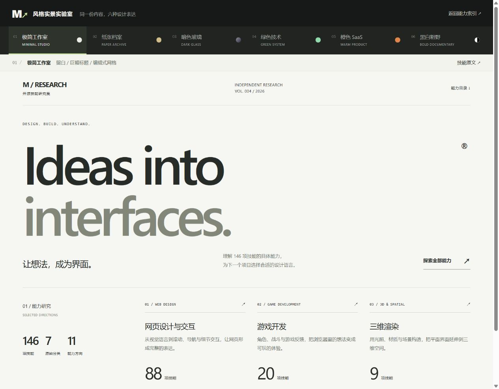
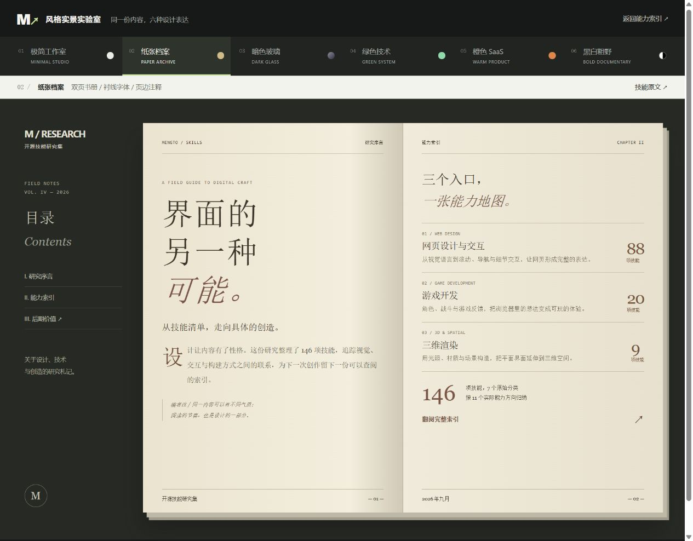
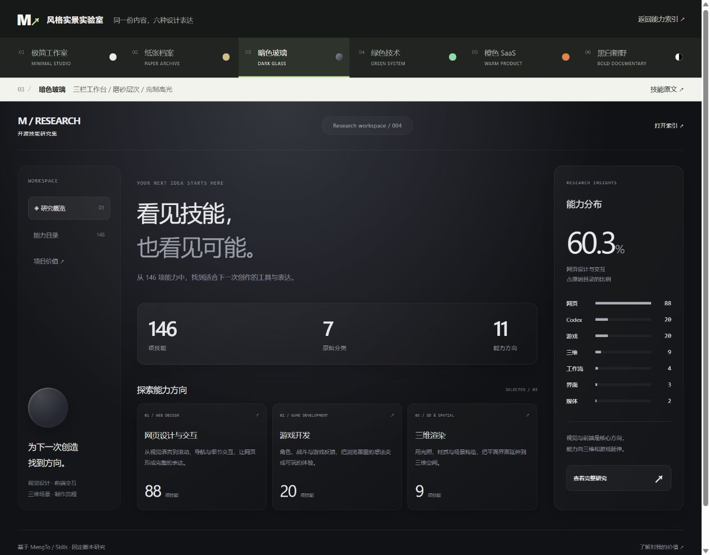
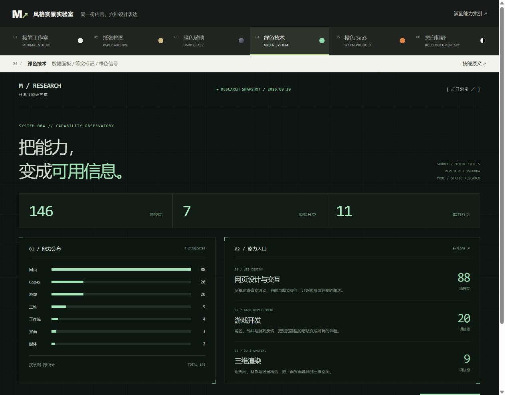
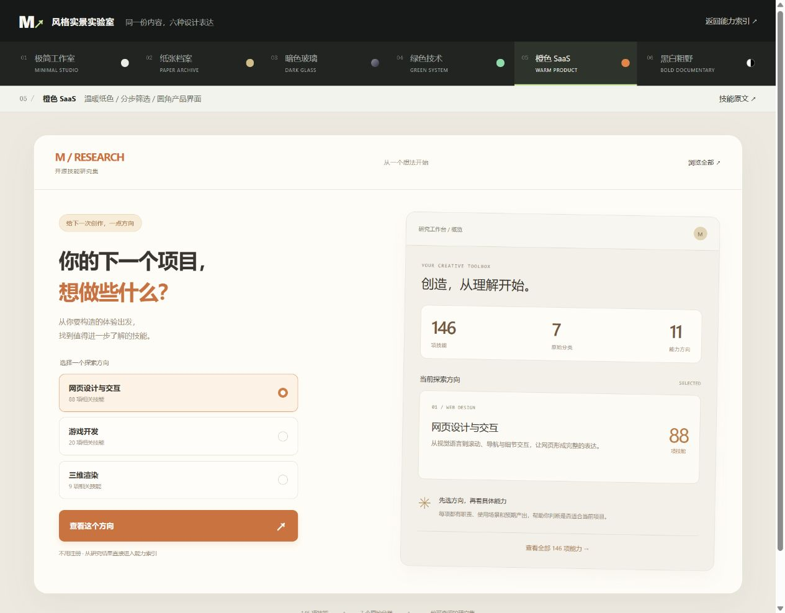
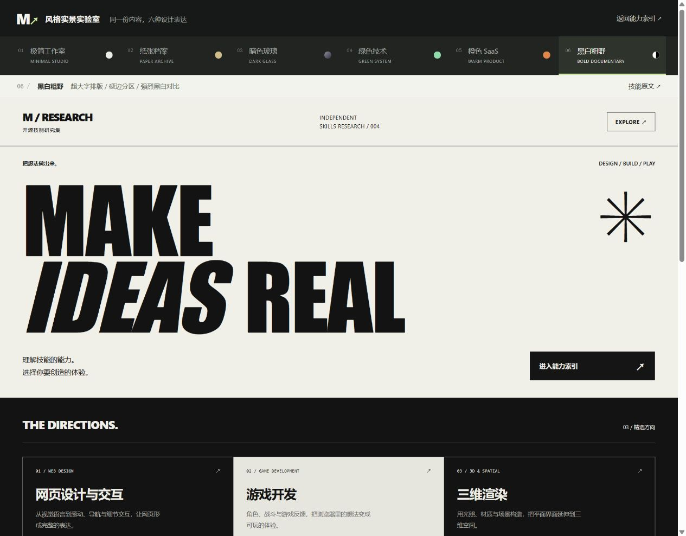

一个目标或参考
产品说明、研究内容、参考网页、录屏，或想实现的视觉和交互效果。
146 项技能指导 AI 组织页面、确定风格、实现交互，延伸到三维、游戏与制作流程。从实际效果出发，理解每项技能负责什么，以及何时值得用。
上方按上游目录统计；下方按具体能力浏览。
MengTo/Skills 把设计规范、页面组织、交互做法和制作经验写成 AI 可以按需读取的技能。它的核心价值，是帮助你把“想做出这样的体验”转成具体的页面结构、视觉规则、代码实现和验收要求。
产品说明、研究内容、参考网页、录屏，或想实现的视觉和交互效果。
明确布局、素材、状态、动效和验证要求；有的技能还附带演示、脚本或代码资源。
完整介绍页、不同风格的界面、三维体验、游戏原型，以及审查和交付记录。
并不只是“换风格”。 风格是其中一类；整页叙事、交互实现、三维与游戏系统、参考拆解和交付流程，也各有对应技能。成果由 AI 结合项目与工具实现，技能本身是指导方法。
同一份研究内容，分别以一个主风格技能构造。你可以直接观察布局、字体和材质的变化；点击图片打开对应页面。

agency-grid-layout-minimal
book-serif-index
dark-glass-clean-layout
tech-green-dark-mode-modern
orange-clean-paper-saas
documentary-brutalist-agency以上截图来自本项目的实际构造，按对应 SKILL.md 正文实现；未复刻或运行上游 demo。六个样例验证了所选规范的应用，不代表全部 146 项效果都已实测。
按实际用途归纳为 11 个方向，共 146 项。每组展示代表技能、预期效果和使用场景，底部说明组合方法与能力边界。

按能力重新归类，与上游七个目录的统计口径不同；各组互不重复，总数仍为 146。
选技能时先看它负责的范围。下面按工作层次理解；完整的 11 个能力方向与代表名称见上图和技能索引。
安排首屏、利益点、证据、定价、案例、FAQ 和行动入口。可产出完整介绍页或作品集。
规定字体、配色、留白、网格和材质。适合已有内容需要改版，或一个项目要尝试多个视觉方向。
13 项滚动叙事、12 项界面细节、23 项互动效果；实现文字显现、状态反馈、粒子、地球或物理交互。
构造天空、水面、天气、四季和虚拟导览。适合空间展示、沉浸式产品体验与可视化原型。
覆盖移动、战斗、敌人、背包、关卡、音效与试玩。适合浏览器游戏原型；完整游戏还需素材、内容与持续测试。
参考提炼 6 项、质量审查 9 项、素材内容 7 项、制作交付 6 项；产出实现说明、素材、验收证据和发布记录。
你目前在做开源项目研究，最直接的用法是把文字研究变成容易看懂、可以体验的网页。之后再按任务扩展到产品与交互原型。
整理真实结论 → 选择整页结构 → 确定风格 → 展示实景与证据。产出可分享的研究页，就像当前项目。
可选：landing-page / book-serif-index / workflow-progress-screenshots拆解版式、素材、滚动顺序与状态变化，再形成具体实现要求；保留来源，避免把参考品牌与数据照搬进自己的项目。
可选：video-to-superprompt / html-to-interaction-prompts讲清使用流程、产品证据、边界与演示入口。使用真实产品资料；后台业务、模型接入和权限系统另行开发。
可选：product-proof-saas / operational-enterprise-ai / pricing-page先做一个小而完整的可用原型：一个空间、一段交互或一次战斗循环，再检查手机表现与运行成本。
可选：3d-virtual-tour / build-isometric-arpg / test-playable-web-games审查实际结果，记录关键参数、限制和踩坑经验，再将可复用的做法提炼成技能与交付流程。
可选：web-technique-to-skill / iterate-until-verified / workflow-ship-change优先从你正在做的研究展示页和个人工具介绍页开始。三维和游戏能力在任务确实需要空间感或玩法时再采用；收益要以真实成品与验收结果判断。
operational-enterprise-ai 同时指导页面叙事、视觉、展开行、案例、表单和验收，覆盖范围比单一风格技能更广。它能指导企业 AI 产品的介绍与获客页面，不能据此推断完整 AI 系统已经实现。
说明系统边界、审批、审计与回退；组织解决方案、安全证据、案例和 FAQ；实现页面交互、表单状态与演示入口。
数据库、模型调用、知识库、认证授权、审批执行、审计存储、后端服务和业务逻辑。页面里的能力承诺必须有真实实现支撑。
整页指导确定结构 → 选择一个主视觉规范 → 按需添加局部交互 → 补充素材 → 审查验证 → 交付。
技能之间可以有职责重叠。以任务为准选定主规范，发生冲突时明确取舍；不必把多个风格叠加使用。研究依据：固定版本 798db0a；全量元数据与目录核对，原有正文抽查，并补充读取六个演示风格与企业 AI 页的规范。能力描述与个人使用建议属于研究归纳；实际构造与验证范围单独标明。
从你关心的效果或问题出发，找到对应的技能。
尝试更短的关键词，或移除方向和分类限制。